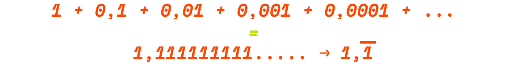

In matematica, una serie si definisce come la somma degli elementi di una successione. Si tratta di una generalizzazione dell'operazione di addizione. La particolarità delle serie matematiche risiede nell'estensione dell'insieme comprendente i suoi addendi, che risultano infatti infiniti. Eppure, nonostante possa sembrare ovvio che la somma di infiniti termini ci restituisca un numero infinito, in realtà nel caso delle serie matematiche, non sempre è così.
Per comprendere meglio come ciò sia possibile conviene prima chiarire alcuni concetti.
Una collezione di elementi rappresenta un insieme se esiste un criterio oggettivo che permetta di constatare univocamente se un qualunque elemento possa far parte o meno del raggruppamento.
Nell'uso informale gli oggetti facenti parte di una collezione potrebbero essere qualunque cosa: numeri e lettere ma anche persone, colori, figure geometriche o animali... non necessariamente omogenei. Per parlare di insieme però i suoi elementi devono essere ben definiti e determinati. Il concetto di insieme è considerato un concetto “primitivo“ ed intuitivo: primitivo perchè viene introdotto come nozione non derivabile da concetti più elementari, intuitivo perchè derivato dall'analogia con la nostra esperienza sensibile di scatole e contenitori.
Se per esempio riuniamo una sedia, il numero 7 e Max Huber stiamo prendendo in considerazione una collezione di elementi non accomunati da una caratteristica oggettiva.

Rimaniamo nei termini dell'informalità. Se però a questi elementi diamo una caratteristica comune come l'essere di colore rosa otteniamo un insieme di elementi omogeneo.
Traduciamo questi due esempi matematicamente: dei numeri non accomunati da alcuna caratteristica oggettiva formano semplicemente una collezione, un raggruppamento.
Se a questi elementi però doniamo un comune attributo si tratterà invece di un insieme. Questi numeri potrebbero per esempio essere tutti numeri divisori di 36.
Quello dell'insieme dei divisori di 36 è una caratteristica piuttosto limitatante che non lascia spazio ad un insieme molto vasto, ma se invece come attributo che definisce il nostro insieme consideriamo quello dei multipli di 3, quest'ultimo comincia ad espandersi, diventando difatti un insieme infinito, come lo sono i numeri multipli di 3. In questo caso stiamo parlando di una successione, definibile come una sequenza infinita di elementi ordinati.
In analisi matematica, una successione o sequenza infinita o stringa infinita può essere definita intuitivamente come un elenco ordinato costituito da un'infinità numerabile di oggetti detti termini della successione, tra i quali sia possibile distinguere in ordine: un elemento primo, un elemento secondo, un terzo e così via fino ad arrivare ad un n-esimo elemento per ogni numero naturale n.
A differenza degli insiemi, in una successione è rilevante l'ordine in cui gli elementi si trovano all'interno della sequenza, inoltre un elemento può comparire più volte e così diversi termini possono coincidere.
I multipli di 3 possono costituire una successione:
I reciproci dei numeri naturali possono formare una successione:
Le potenze di 2 possono essere una successione:
IN BREVE
COLLEZIONE
Elementi non accomunati da una caratteristica oggettiva.
INSIEME
Gli elementi di un insieme sono definiti da una comune caratteristica oggettiva.
SUCCESSIONE
È una sequenza infinita di elementi ordinati.
L'ultimo concetto da chiarire prima di introdurre definitivamente la serie matematica è quello di sommatoria. Piuttosto che una regola o una legge, la sommatoria è un simbolo matematico. Essa consiste in una notazione sintetica che permette di riportare in forma abbreviata l'operazione di somma di un certo numero di addendi che, poichè inclusi tra due limiti e “fatti passare” attraverso una medesima funzione, fanno parte di un insieme.
Questa notazione prevede:
— una lettera sigma maiuscola
— una lettera chiamata indice della sommatoria. Si tratta di una variabile che assume diversi valori e viene solitamente indicata con k, j, i o n minuscole.
— Un intervallo di valori interi comprendente tutti i valori assumibili dall'indice della sommatoria.
— Un'espressione algebrica alla destra della sigma in cui può comparire l'indice della sommatoria.
Questa sommatoria non è quindi nient'altro che l'abbreviazione della formula:
È perciò la somma di tutti i risultati della funzione attraverso cui è passato il valore k al variare del suo valore tra i limiti m e n.
Un esempio di sommatoria potrebbe essere quella di tutti i numeri naturali compresi tra 1 e 100, la cui notazione sintetica è la seguente:
che si legge sommatoria di k che va da 1 a 100 di f(k); il cui valore risulta pari a 5050.
È anche possibile utilizzare questa notazione per somme di un numero infinito di termini; si tratta di sommatorie infinite, ovvero di serie matematiche! Infatti le serie matematiche sono sommatorie in cui uno o entrambi i limiti, superiore o inferiore, vengono rimpiazzati dal simbolo di infinito +∞ o dal simbolo di infinito negativo -∞.
Una serie matematica è per esempio quella dei numeri naturali.
Il risultato di questa sommatoria infinita è, come facilmente si può prevedere, un numero infinito che pertanto verrà indicato proprio con la sua notazione sintetica che viene affiancato dal calcolo del suo limite. Il risulato della serie dei numeri naturali è chiramente un numero positivo infinito che verrà pertanto indicato così:
IN BREVE
SOMMATORIA
È la somma di un certo insieme di addendi.
SERIE
È una sommatoria infinita, la somma degli elementi di una successione.
Il caso della serie matematica dei numeri naturali, purchè astratto, rimane comunque semplice da comprendere: la somma di infiniti termini, ognuno positivo e ognuno maggiore dell'altro ha come risultato un valore che tende all'infinito.
Quando il risultato di una serie è un valore che tende all'infinito si dice che la serie ha carattere divergente. Distinguere il carattere di una serie è necessario perchè, come citato all'inizio, non sempre la somma di infiniti valori ha come risultato un numero infinito, e perciò non sempre una serie deve avere carattere divergente.
Per comprendere meglio questo fenomeno, che sicuramente a primo impatto appare controintuitivo, introduciamo un esempio: prendiamo in esame questa serie e tentiamo di individuare il valore verso il quale le sue somme parziali tendono:

Traduciamolo così:
Si può notare che i termini di questa successione sono tutti esponenzialmente più piccoli del valore che li precede. Cominciamo quindi a calcolarne la somma parziale:
La sommatoria infinita di questa successione tende a 1,1111...(periodico) che, pur essendo un numero non scrivibile come in forma intera o decimale finito, è un numero finito.
Quando il risultato di una serie è un valore che tende ad numero finito si dice che la serie ha carattere convergente, ovvero che le sue somme parziali convergono verso un singolo valore finito.
Bisogna però precisare che una serie che non è divergente non necessariamente sarà convergente, esiste infatti un terzo carattere che la serie può assumere. Si tratta delle serie irregolari, in cui il risultato delle sue somme parziali, invece che tendere ad a ∞ o ad numero finito, assume valori sempre diversi o oscilla tra due valori, pertanto non ammettendo limiti.
È il caso per esempio di questa serie:
Riscrivibile così:
Il risulato delle somme parziali di questa serie oscilla costantemente tra i valori 0 e -1, perciò non ammette limiti non tendendo ad alcun valore.
IN BREVE
SERIE DIVERGENTE
La serie tende a ∞.
SERIE CONVERGENTE
La serie tende ad un numero finito n.
SERIE IRREGOLARE
La serie non ammette un limite.
L'utilizzo delle serie matematiche può essere applicato per risolvere un celebre paradosso del filosofo greco Zenone di Elea. Zenone elaborò il paradosso di Achille e la tartaruga per negare la possibilità del movimento, di cui il filosofo dichiara l'illusorietà.
Riportiamo, con le parole di Aristotele il paradosso:
“Il secondo argomento è quello detto di Achille. Eccolo: il più lento corridore non sarà mai raggiunto nella sua corsa dal più veloce. Infatti sarà necessario che l'inseguitore proceda fin là donde si è mosso il fuggitivo, quindi è necessario che il corridore più lento si trovi sempre un po' più innanzi.”
Supponiamo che Achille conceda un vantaggio di 100 metri in partenza alla tartaruga e che l’eroe mantenga una velocità 100 volte superiore a quella della testuggine (supponiamo costanti entrambe le velocità). Dopo 10 secondi Achille avrà percorso i 100 metri che lo separavano dalla tartaruga e nel frattempo essa si sarà portata avanti di un metro. Successivamente Achille avanzerà del metro mancante e la tartaruga di un centimetro. Poi Achille procederà di un centimetro e la tartaruga sarà sempre avanti, questa volta di un decimillimetro, e così via.
Sembra ragionevole pensare che Achille non raggiungerà mai la tartaruga! Eppure la realtà ci dimostra il contrario: ad un certo punto Achille supera la tartaruga. Come spiegare questo risultato paradossale? Per cominciare a sciogliere la questione sommiamo i tratti di strada percorsi da Achille. Avremo così in metri:
Abbiamo ottenuto una somma infinita analoga se consideriamo i tempi impiegati nei vari tratti, proporzionali alla distanza percorsa. Ci siamo quindi ritrovati di fronte ad un semplice esempio di serie numerica.
Riscriviamolo con la notazione sintetica:
Naturalmente saremmo portati a pensare che, continuando a sommare termini positivi, otterremo un risultato sempre più grande, che è destinato a crescere sempre più; sappiamo che però questo non sempre succede e l'abbiamo dimostrato prima! I termini difatti, nel proseguire l'addizione, diventano sempre più piccoli, o meglio infinitesimi, e non può quindi tendere ad infinito, proprio come nell'esempio che abbiamo precedentemente osservato per descrivere le serie convergenti, di cui fa parte anche la serie che descrive il paradosso di Zenone e che ci ha aiutato a risolverlo. La serie infatti tende ad un numero finito, ovvero il valore che descrive il periodo di tempo intercorso dall'inizio della gara e il momento in cui Achille raggiunge la sua avversaria.
Quella utilizzata per confutare la tesi di Zenone viene definita serie geometrica. Le serie geometriche sono serie tali per cui il rapporto tra due termini succesivi è costante. Una serie analoga può essere utilizzata comprendere come un'area finita (come per esempio quella di un rettangolo) sia sì divisibile in metà sempre più piccole in maniera proporzionale fino all'infinito ma rimanga comunque un'area finita.
Il concetto di serie matematica può essere applicato anche alla realtà! Il metodo computazionale delle sommatorie infinite può essere applicato per esempio per calcolare quanto un'investimento in banca possa generare nel corso del tempo, è il caso delle serie geometriche. O ancora, le serie geometriche possono essere utilizzate per calcolare la quantità di una specifica medicina presente nel corpo di una persona se se ne conoscono dosaggio, dose e la velocità alla quale la sostanza decade all'interno dell'organismo. Le serie armoniche, che sono sommatorie delle frazioni unitarie dei reciproci dei numeri naturali, descrivono alcuni fenomeni musicali come il comportamento delle onde che producono un suono, e sono state utilizzate per formulare alcuni principi della teoria musicale più antica. La stessa serie armonica è stata citata in alcune ipotesi sull'espansione dell'universo e sulla possibilità di raggiungerne con un razzo i confini. Un'altra celebre serie matematica è la sequenza di Fibonacci, le cui tracce si possono trovare anche in natura. Le serie vengono anche utilizzate per l'approssimazione di valori molto grandi o dall'elevato numero di decimali.
Progetto di Eugenio Pancaldi + Isabella Rosa
Matematica per il design 2021
Docente Andreas Gysin
Triennio in Progettazione grafica e comunicazione visiva
ISIA U